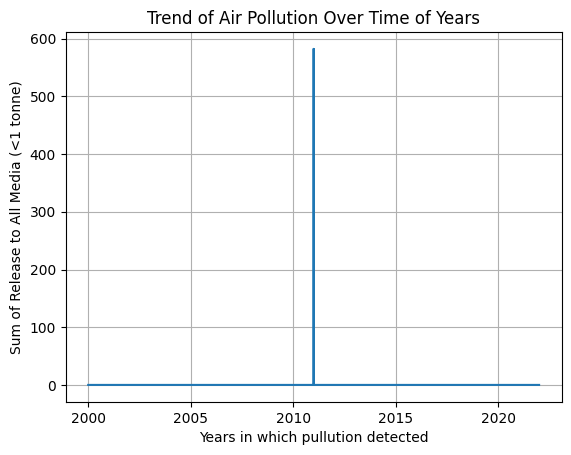
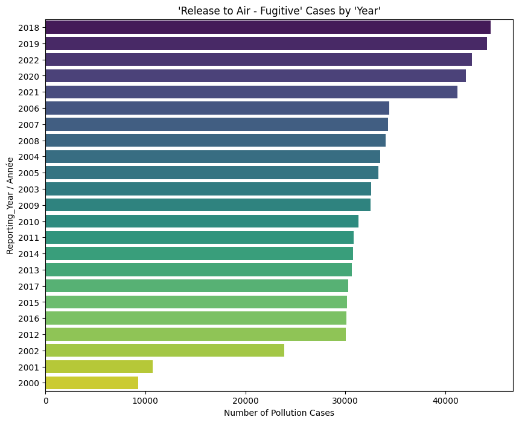
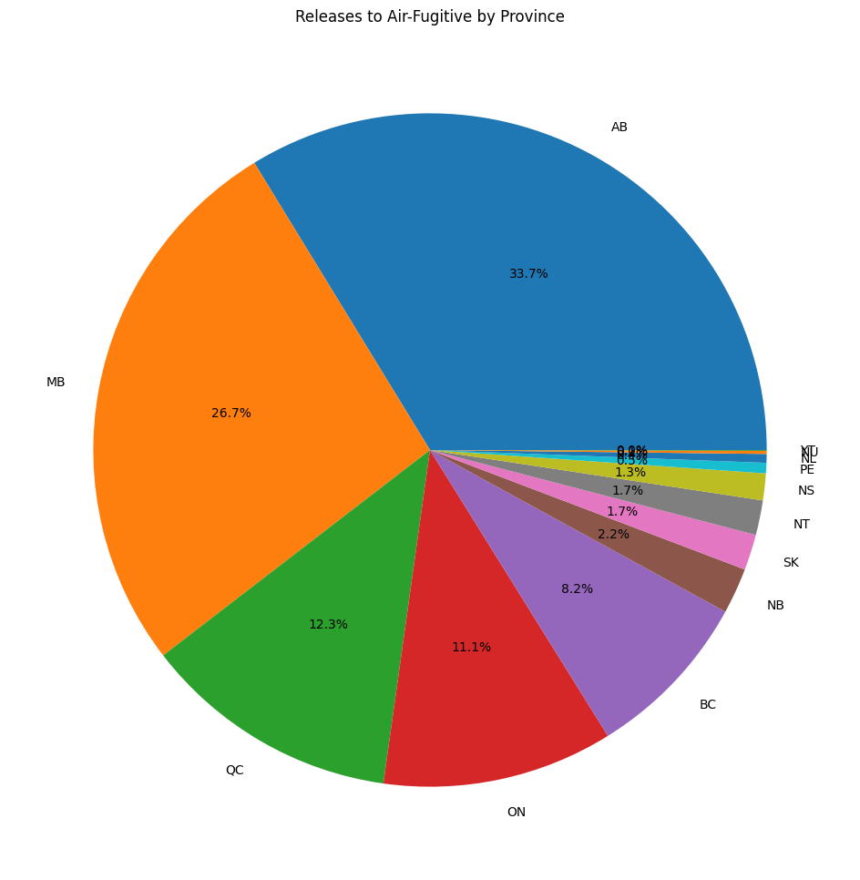
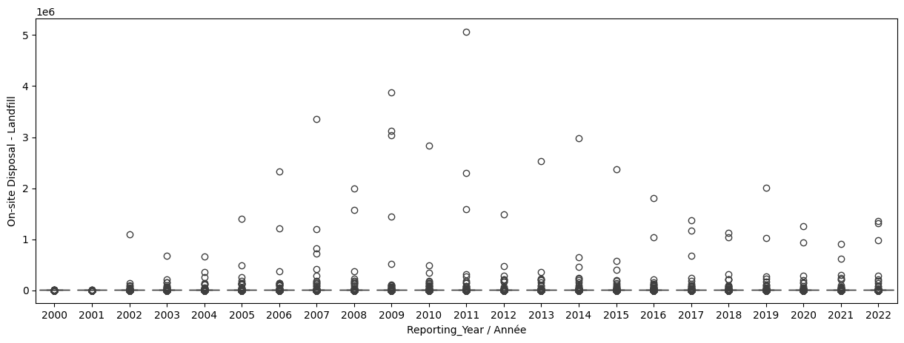
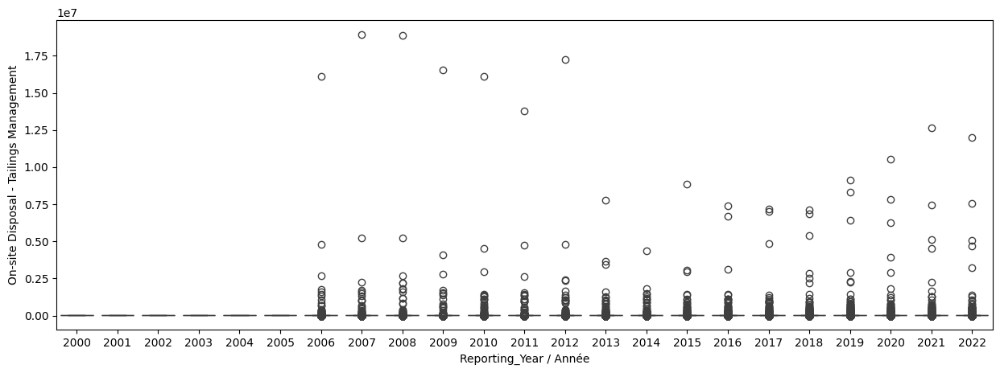
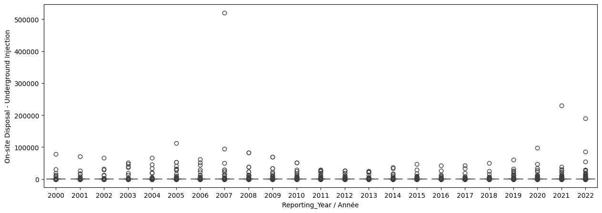
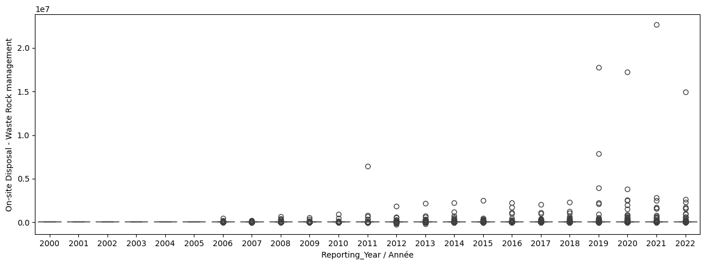

737,516
Pollutant release records
CMPT 2400 & CMPT 3510
Environmental Data Analysis and Forecasting Exploration
NorQuest College | The DataMelds
Back to PortfolioThis collaborative academic project focused on analyzing historical Canadian industrial pollution data to understand environmental patterns and explore future emissions trends.
The project used National Pollutant Release Inventory (NPRI) data to investigate industrial emissions, waste disposal and environmental reporting information.
Pollutant release records
Disposal and transfer records
Environmental comment records
Total records across three source tables
Imported environmental datasets from multiple Excel worksheets.
Identified missing values, removed selected columns and corrected data formats.
Applied mean and mode imputation, forward filling and backward filling.
Explored environmental reporting patterns and relationships between variables.
Applied statistical Z-score methods to identify extreme observations.
Developed boxplots, scatterplots, bar charts and correlation heatmaps.
The analysis explored industrial release pathways, geographical reporting patterns, extreme pollution observations and relationships between environmental variables.

The visualization shows a significant spike around 2011. This unusual observation requires further investigation of measurement units, aggregation methods and data quality.

2018 recorded the highest number of cases in this visualization, followed by 2019. Reporting counts were considerably lower during the early 2000s.

Alberta represents 33.7% of the plotted distribution, followed by Manitoba at 26.7%, Quebec at 12.3% and Ontario at 11.1%.

The heatmap identifies a negative correlation of -0.76 between latitude and longitude. Correlations between geographical coordinates and air release variables are close to zero, suggesting weak linear relationships.

The visualization identifies several extreme observations, particularly during 2019, 2020 and 2021.

Landfill disposal observations show substantial variability, with the largest plotted observation occurring in 2011.

The analysis reveals extreme observations across multiple reporting years, including particularly large values in 2007 and 2008.

The largest plotted observation occurs in 2007. Additional extreme observations appear in 2021 and 2022.

The visualization shows several large observations between 2019 and 2022, with the highest plotted value in 2021.
The research explored future trends for five major air contaminants over a five-year period using historical environmental information.
The exploratory analysis provides a foundation for future emissions forecasting. However, a validated five-year forecasting model was not demonstrated in the available notebook.
Further time-series modelling and performance evaluation would be required to generate reliable future emissions predictions.
Programming and data analysis
Data cleaning and manipulation
Environmental data visualization
Statistical analysis and outlier detection
Interactive analysis and documentation
Source data organization
This project was completed collaboratively by The DataMelds as part of CMPT 2400 and CMPT 3510 at NorQuest College.
This project helped me understand how large environmental datasets can be prepared and analyzed using Python and statistical techniques.
It strengthened my understanding of data quality, visualization and responsible interpretation of analytical findings.
My future goal is to improve my time-series forecasting skills and develop reliable machine learning solutions for environmental challenges.
The technical analysis is documented in a collaborative Jupyter Notebook.
Return to All Projects